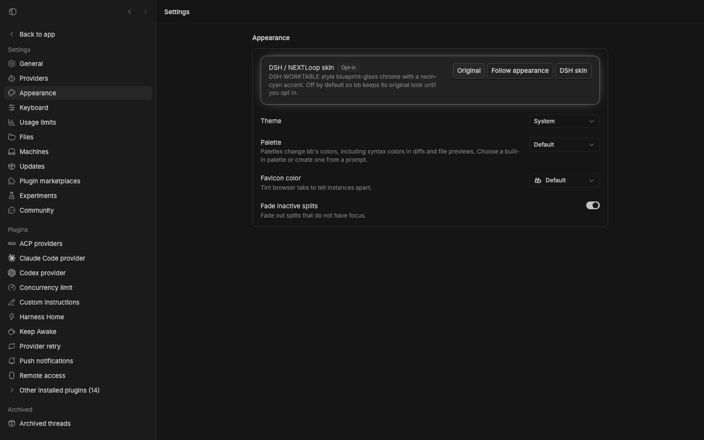
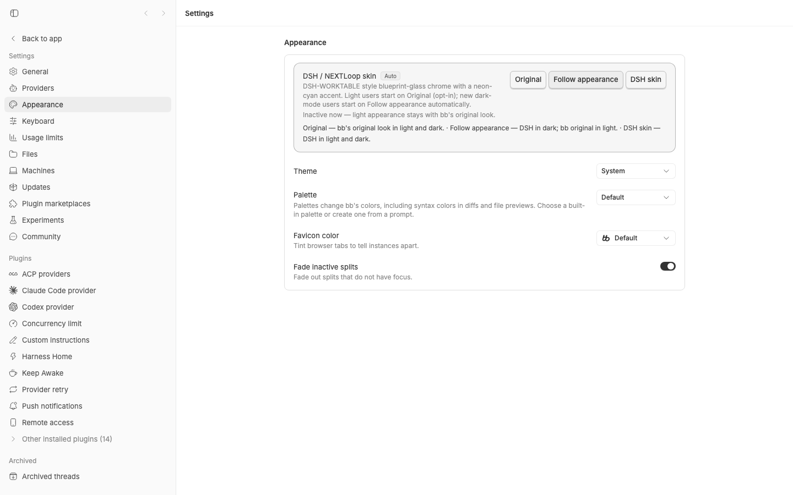
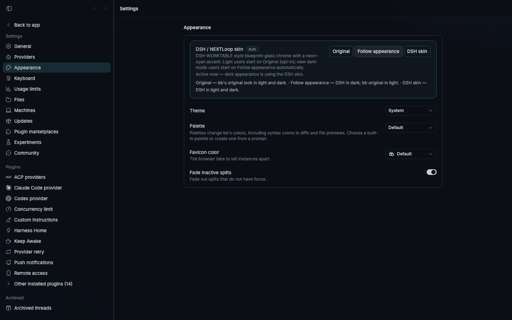
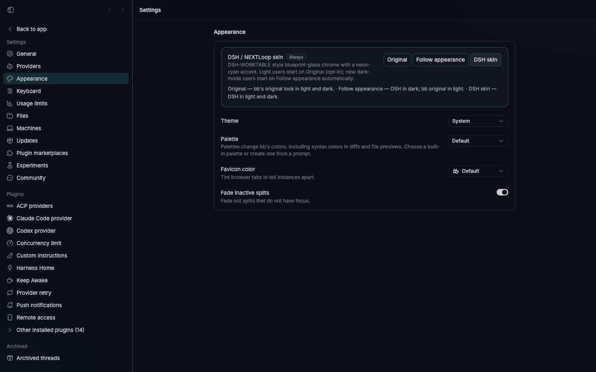


Info（dark）— 84% 玻璃内容底，字段/值文字直接落在玻璃上
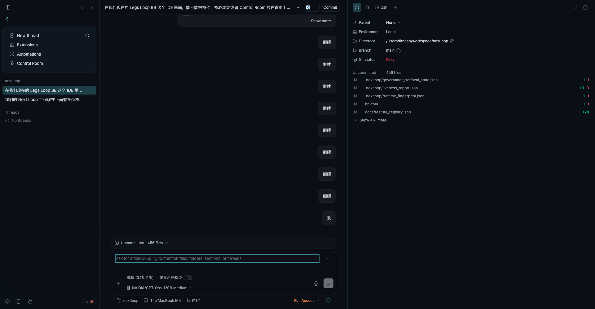
Info（light）— 88% 玻璃内容底，同一 Info 视图的亮色变体
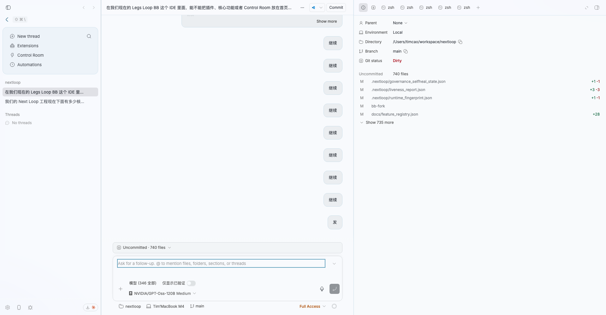
Diff（dark）— 变更卡实底 navy 画布 oklch(0.165 0.016 264)，hunk 高亮可辨
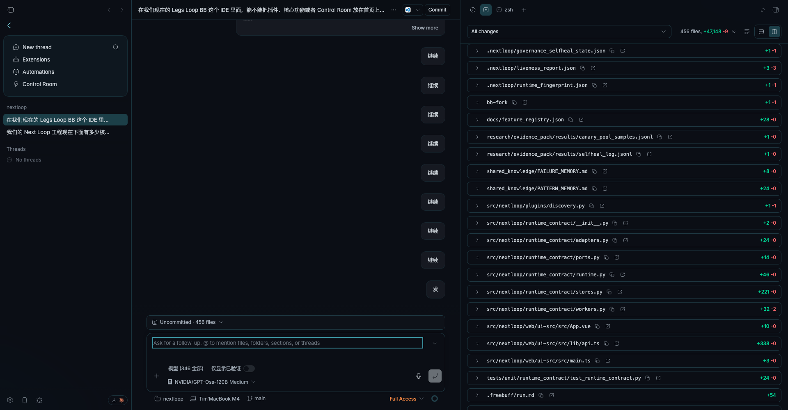
Diff（light）— 变更卡实底亮画布 oklch(0.985 0.004 240)，行内 +N/−N 计数清晰
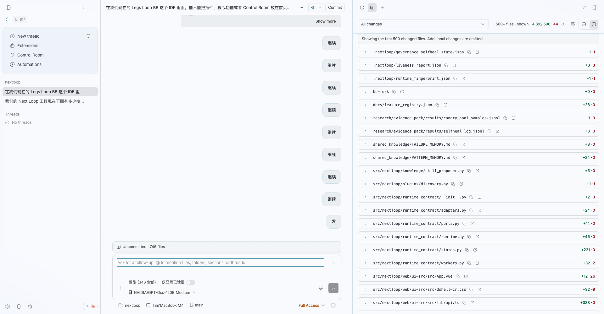
Terminal（dark）— xterm 画布自绘不透明底，字迹 ~16:1
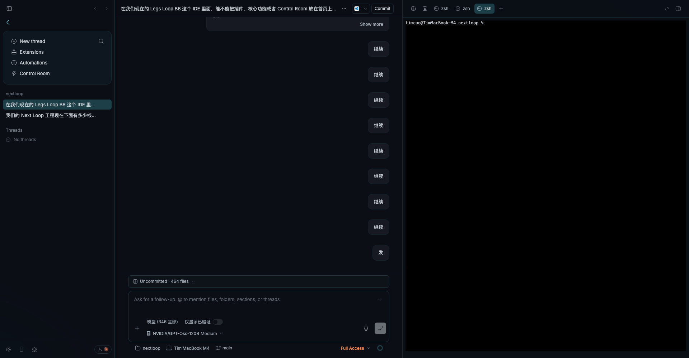
Terminal（light）— light 玻璃面板 + 不透明黑终端窗，反差清晰
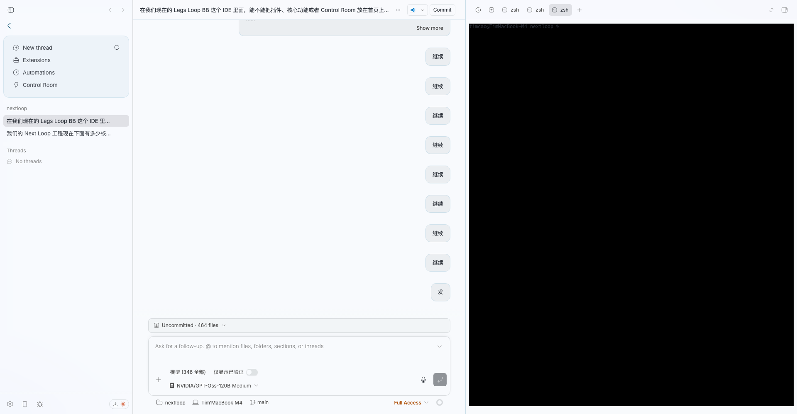
Side chat（dark）— “Replying to…” 引用 + composer 落在玻璃底上
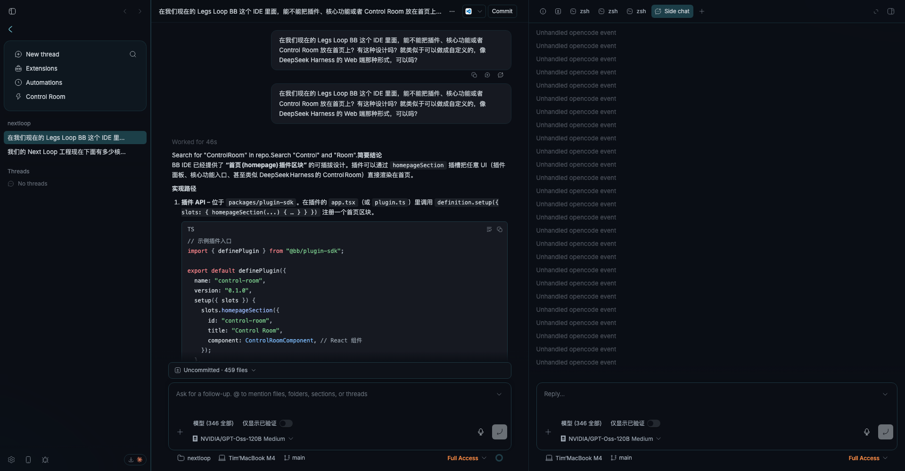
Side chat（light）— 同视图亮色变体，quote/composer 可读
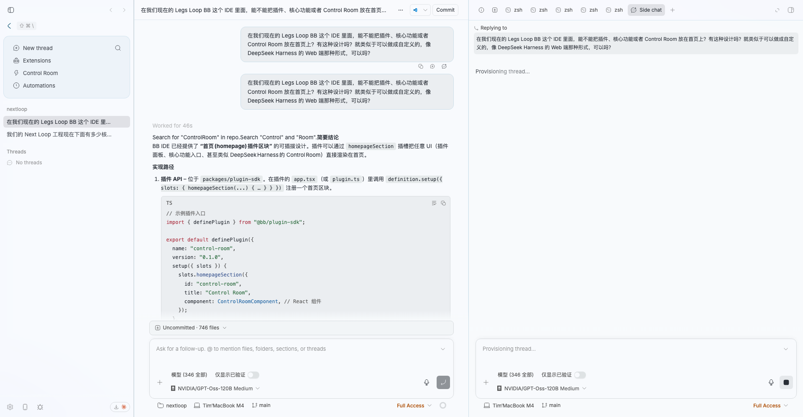
逐窗格可读性审计（computed style + 像素采样 + 逐文本 WCAG 对比，视口 1920×1000，skin=on 强制）：
chrome 顶条 oklab(0.165 … / 0.58)、内容区 / 0.84（dark）；light 为 0.985 / 0.58 与 / 0.88。
· Info：无内层不透明面，字段/值直接上玻璃（dark 亮像素 0.1% / light 暗像素 0.0%，两边互为镜像）；
· Diff：dark 为 2 个实底卡 bg-background→oklch(0.165 0.016 264) navy 画布 + border，hunk 文字亮像素 0.9% 可辨；light 为实底 oklch(0.985 0.004 240) 亮画布卡 + 0.7% 彩色 hunk 记号；
· Terminal：xterm 自绘不透明画布（~16:1 字迹对比），亮色主题下仍是黑终端窗、与 light 玻璃面板反差清晰；
· Side chat：composer/textarea 直接上玻璃（dark 暗区 97.8% / light 亮区 98.8%），“Replying to…” 引用上下文完整渲染；
· 亮色逐文本对比（canvas 沿祖先链 alpha 合成取样，阈值 4.5 / 大号 3.0）：Info 37 节点、Diff 122 节点、Side chat 11 节点全部通过，0 失败；
0 console/CSS errors（仅上游 jotai/插件噪音）。结论：玻璃 CSS 规则挂在共享面板容器上，天然覆盖全部 tool tab，无需逐 tab 特判；
玻璃仅作用于 chrome 层，内容可读性由 84–88% 近实底 + 自绘终端画布保证，light 变体同理。
生成方式：headless Playwright（chromium）1440×900 viewport 连到本地 bb dev server （http://127.0.0.1:18154），皮肤三态（localStorage bb.dshell.enabled = off/auto/on）：默认 off；auto 档暗色自动启用、亮色用原版。 评审基线用途：前后对照该皮肤层的视觉回归；核心交互回归另有 41 例 vitest + typecheck 覆盖。